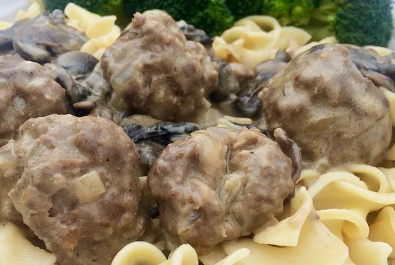

Beef Stroganoff Sauce with Meatballs
Return to Homepage
Classic beef stroganoff sauce with meatballs. Serve over rice or egg noodles.
Ingredients
- 1/2 teaspoon vegetable oil
- 1 pound ground sirloin
- 3 tbps Worcestershire sauce
- 1 Egg
- 1/3 cup dry bread crumbs
- 1/2 small onion, chopped
- salt and ground black pepper to taste
- 1/4 cup butter, divided
- 16oz mushrooms slices
- 2 tbps all purpose flour
- 10.5oz can beef broth
- 1 tsp ground mustard
- 1/3 cup sour cream
Steps
- Preheat oven to 350 degrees F (175 C) Coat a baking sheet with oil.
- Combine ground sirloin, Worcestershire sauce, egg, bread crumbs, onion, salt, and pepper in a bowl. Mix well. Divide into golf ball-sized meatballs. Place on the prepared baking sheet.
- Bake in the preheated oven until meatballs are no longer pink in the center, about 15 minutes.
- Melt 2 tablespoons butter in a large skillet over medium heat. Add mushrooms; cook and stir until soft, about 10 minutes. Push mushrooms to the side of the pan.
- Melt remaining 2 tablespoons butter in the skillet; whisk in flour. Add broth and mustard; bring to a boil. Add meatballs and cook until some sauce is absorbed, 10 to 15 minutes. Remove from heat. Add sour cream and stir to combine.
